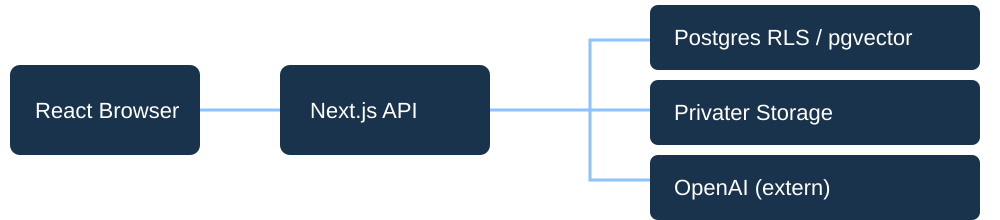
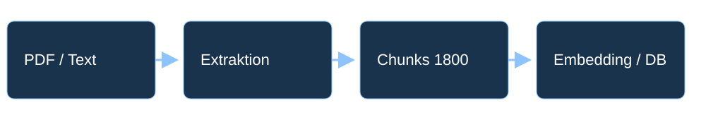
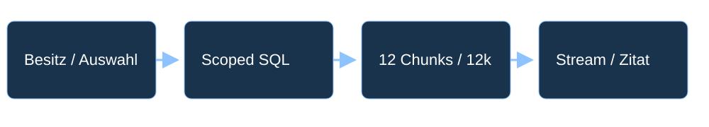

Lumen / Engineering Review · 30 s
Aufgabe & Scope Everlast NotebookLM-Klon: Upload → Frage → Originalbeleg. KI erwünscht, Ergebnisse überprüfbar.
Production-Code 257f24f · 06.11.2026. Kein SaaS. Sieben Tage ab 03.11. Lumen / Engineering Review · 35 s
Bewusst priorisiert PDF/Text, Quellenfilter, belegter Chat, Persistenz. Notizen/Briefings als Zusatz.
Nicht Production: Accounts, OCR, Audio, URL/Websuche, Sync. Next/React/TS + Supabase + AI SDK statt unnötiger Frameworks. Lumen / Engineering Review · 135 s
Live: Quelle → Antwort → Original mission.txt importieren. „Wann startet AURORA, mit welchem Budget?“ Zitat öffnen. „Wer verantwortet das?“ „Was ist noch offen?“ Reload und Quelle erneut auswählen.
Nur autorisierte eigene synthetische Vorführsitzung. Drei Antworten kosten sechs Claims plus Import. Keine privaten Daten, kein Fake-Erfolg. Lumen / Engineering Review · 35 s
Grenzfall: fehlende Evidenz „Wie hoch ist die Jahresfinanzierung?“ Die Quelle entscheidet das nicht.
Pilotbudget ist nicht Jahresfinanzierung. Optional update.txt für Versionskonflikt; kein Webwissen-Fallback. Lumen / Engineering Review · 55 s
Architektur & Trust Boundaries Browser → Next.js API → Supabase RLS/pgvector/privater Storage. API → OpenAI.

anon client + x-visitor-token → RLS ↗
HttpOnly/Secure/SameSite-Cookie, Hash/30 Tage. Service Role nur Sessiontabelle; Datenclient anon+Token. Autorisierung außerhalb Modell. Lumen / Engineering Review · 45 s
Import: Herkunft erhalten PDF/Text → Extraktion → 1800-Zeichen-Chunks → Embeddings/Persistenz.

chunkCharacters: 1800; page / section ↗
5 MiB/100 Seiten/500k Zeichen; kein OCR. SHA256+Uniqueindex. Synchron statt Queue, Prozessverlust/Cleanupfehler und Importtimeout offen. Lumen / Engineering Review · 55 s
Retrieval: erst Scope, dann Distanz Auswahl/Besitz/ready → materialisierte exakte SQL-Suche → quellenfaire Rangfolge → Kontext → Stream/Zitat.

scoped AS MATERIALIZED → source_rank → LIMIT 12 ↗
8 Quellen, 12 Chunks, 12000 Zeichen. RAG begrenzt Kosten, kann Details verlieren. ID-Validität nicht semantische Wahrheit; historische IVFFlat-Ursache nur plausibel. Lumen / Engineering Review · 45 s
Tests: Vertrag ≠ Modellqualität 105 Unit/DB · 72 Chromium · 2 Storage · Typecheck/Build. Identischer aktueller Appbaum, 06.11.
Zwei optionale PDF-Fixtures übersprungen. Kein neuer Vollsuite-Lauf. Historische echte Mehrturn-Smokes getrennt. WebKit/Recall offen; v1 5/6 fehlgeschlagen, v2 unvollständig. Lumen / Engineering Review · 40 s
Limits ≠ hartes Gesamtbudget 12 Provider-Claims je Besucher/Stunde. Chat zwei Claims. 4096 Outputtokens, 30 Sekunden, keine Auto-Retries.
Besitz → Retrieval → zweiter Quota-Claim ↗
Cookie-Neuanlage umgeht Quote. Spendlimit unbestätigt. Importembedding vs Chatinput/output/queryembedding getrennt kalkulieren, keine erfundenen Eurobeträge. Lumen / Engineering Review · 35 s
KI-Workflow: konkrete Korrektur SDK-History mit Assistant-Metadaten → Folgefrage 400. Fix: aktueller Userturn und autorisierte Serverhistory.
currentUserMessages → strikte letzte Frage ↗
PR24: reproduzierter Vertrag/Regression, isolierter Lauf, realer Vierturn-Smoke. Keine erfundenen TDD/Junior-Sessions. Junior-Vorschlag: OCR-Fehlerfixture ohne Productionrechte. Lumen / Engineering Review · 20 s
Kern liefern, Grenzen zeigen 21 Prüfthemen mit Codebelegen. Nächste Schritte: semantische/Recall-Evals, WebKit/A11y, Importresilienz, Betrieb und Spendprüfung.
1000 Nutzer nicht getestet. Private Repozugriffe vor Versand freigeben. Loom noch aufnehmen; Antwortmail nur Entwurf. Anhang nicht mitsprechen. A01 / belegt
Scope und Priorisierung Accounts/Seeds ersetzt. Audio/OCR/URL/Websuche nicht Production; Notizen/Briefings vorhanden.
Code / Testbeleg ↗ · Übersicht Enger Nachweis, keine pauschale Freigabe. A02 / belegt
Notebook und Persistenz Cookieverlust ohne Recovery. Aktueller Navigation-Smoke und Persistenztests belegt.
Code / Testbeleg ↗ · Übersicht Enger Nachweis, keine pauschale Freigabe. A03 / belegt
Import und OCR Keine OCR; Limits/PDF-Worker und Fehlermeldungen vorhanden, keine universelle PDF-Garantie.
Code / Testbeleg ↗ · Übersicht Enger Nachweis, keine pauschale Freigabe. A04 / belegt
Quellenauswahl Besitz/Ready/SQL-Filter und quellenfaire Rangfolge belegt. Nach Reload neu auswählen.
Code / Testbeleg ↗ · Übersicht Enger Nachweis, keine pauschale Freigabe. A05 / belegt
Mehrturn und Streaming Aktueller Userturn/Serverhistory/Cancel/Warnungen. Realer Vierturn-Smoke historisch cc29f2e.
Code / Testbeleg ↗ · Übersicht Enger Nachweis, keine pauschale Freigabe. A06 / teilweise
Fehlende Evidenz und Konflikte Aktuelle manuell grüne Modellmatrix fehlt; mit A19 bündeln.
Code / Testbeleg ↗ · Übersicht Enger Nachweis, keine pauschale Freigabe. A07 / teilweise
Semantische Zitate ID-Prüfung und Originalpassage vorhanden; semantische Deckung/Recall offen.
Code / Testbeleg ↗ · Übersicht Enger Nachweis, keine pauschale Freigabe. A08 / teilweise
Erstnutzer-Einstieg Direkter Besucher/Willkommen/Quellen-zuerst belegt. Drei Usability-Pfade unbelegt.
Code / Testbeleg ↗ · Übersicht Enger Nachweis, keine pauschale Freigabe. A09 / teilweise
Responsive und A11y Chromium/320px/Fokus/Composer belegt; WebKit/iOS/axe/Kontrast/Screenreader/Slow-Network offen.
Code / Testbeleg ↗ · Übersicht Enger Nachweis, keine pauschale Freigabe. A10 / belegt
Besucher-/DB-/Storage-Isolation Negative Reads/Mutationen/Spoofing/Retrieval/Storage belegt. Cookie Bearer-Credential.
Code / Testbeleg ↗ · Übersicht Enger Nachweis, keine pauschale Freigabe. A11 / teilweise
Datenmodell und Migration Migrationen/Löschtests belegt; ADR-Review/Cleanup offen, Rate-FK ohne Cascade.
Code / Testbeleg ↗ · Übersicht Enger Nachweis, keine pauschale Freigabe. A12 / teilweise
Retry und Idempotenz Hash/Unique-Index/Retry vorhanden; Prozessverlust/Cleanupfehler und Exactly-once unbelegt.
Code / Testbeleg ↗ · Übersicht Enger Nachweis, keine pauschale Freigabe. A13 / teilweise
Untrusted Content Prompt trennt Daten/Instruktionen, keine Tools. Adversarial Real-Eval nicht grün.
Code / Testbeleg ↗ · Übersicht Enger Nachweis, keine pauschale Freigabe. A14 / teilweise
Limits und Kosten 5 MiB/100 Seiten/500k Zeichen; 12 Claims/h, Chat zwei Claims, 4096 Tokens/30s. Import-Timeout und Spendlimit offen.
Code / Testbeleg ↗ · Übersicht Enger Nachweis, keine pauschale Freigabe. A15 / offen
Betrieb und Skalierung Usage/Release-Rollback vorhanden; SLO/Alerts/CI/1000-Nutzer-Lasttest fehlen.
Code / Testbeleg ↗ · Übersicht Enger Nachweis, keine pauschale Freigabe. A16 / teilweise
Setup und Dokumentation README/env.example/Teststack vorhanden; unabhängiges Clone-to-run-Protokoll offen.
Code / Testbeleg ↗ · Übersicht Enger Nachweis, keine pauschale Freigabe. A17 / teilweise
Architektur und RAG RAG begrenzt Kontext; Recall-Eval/formaler ADR-Review offen.
Code / Testbeleg ↗ · Übersicht Enger Nachweis, keine pauschale Freigabe. A18 / teilweise
Testmatrix und CI Identischer Appbaum: 105 Unit/DB, 72 Chromium, 2 Storage, Build/Typen. Zwei PDF-Fixtures übersprungen; kein neuer CI-Lauf.
Code / Testbeleg ↗ · Übersicht Enger Nachweis, keine pauschale Freigabe. A19 / offen
Echte KI-Evals v1 5/6 fehlgeschlagen; v2 unvollständig/pending review. Aktueller Qualitätsgate fehlt.
Code / Testbeleg ↗ · Übersicht Enger Nachweis, keine pauschale Freigabe. A20 / teilweise
KI-Workflow und Onboarding PR24–26 zeigen Korrekturen; keine erfundenen TDD/Junior-Sessions.
Code / Testbeleg ↗ · Übersicht Enger Nachweis, keine pauschale Freigabe. A21 / teilweise
Loom und Abgabe Loom-Aufnahme/Link/Reviewerfreigabe offen; Mail nur Entwurf.
Code / Testbeleg ↗ · Übersicht Enger Nachweis, keine pauschale Freigabe.